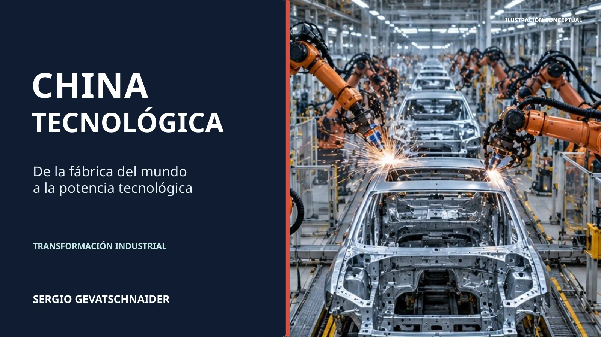

01 · Industria01 · IndustryRobots que fabrican robotsRobots building robots
01 · Industria01 · IndustryRobots que fabrican robotsRobots building robots
Unitree Robotics · 2026
Demostración empresarial · Ensamblaje con el G1Company demonstration · G1 assembly tasksMás de industria ↗More on industry ↗Una biblioteca abierta para comprender las capacidades, las empresas y las políticas que impulsan la transformación tecnológica china.
An open research library on the companies, capabilities, and policies behind China’s technological transformation.
No se pudo iniciar el reproductor. Playback could not start. Abrir el videoOpen the video ↗

De la fábrica del mundo a los sistemas industriales inteligentes. Historia, redes productivas, robótica, inteligencia artificial y estrategia hacia 2030.
From the world's factory to intelligent industrial systems. History, production networks, robotics, AI, and strategy towards 2030.
De los robots que ensamblan piezas a las máquinas que fabrican chips. Mirá una selección acá y explorá los 11 recursos de la videoteca.
From robots assembling parts to the machines behind chips. Watch a selection here and explore all 11 resources in the video library.
01 · Industria01 · IndustryRobots que fabrican robotsRobots building robots
Unitree Robotics · 2026
Demostración empresarial · Ensamblaje con el G1Company demonstration · G1 assembly tasksMás de industria ↗More on industry ↗ 02 · IA y humanoides02 · AI and humanoidsIRON: ¿por qué parece tan humano?IRON: why does it look so human?
02 · IA y humanoides02 · AI and humanoidsIRON: ¿por qué parece tan humano?IRON: why does it look so human?
XPENG · 2025
Demostración empresarial · Locomoción y controlCompany demonstration · Locomotion and controlMás de humanoides ↗More on humanoids ↗ 03 · Semiconductores03 · SemiconductorsEUV: la máquina que fabrica chipsEUV: the machine behind chips
03 · Semiconductores03 · SemiconductorsEUV: la máquina que fabrica chipsEUV: the machine behind chips
Branch Education · 2025
Animación explicativa · Luz, óptica y precisiónExplainer animation · Light, optics and precisionMás de chips ↗More on chips ↗DJI Agriculture · 2024
Videos del fabricante · Abre en el sitio de DJIManufacturer videos · Opens on DJI's websiteMás de aplicaciones ↗More on applications ↗Una demostración muestra capacidades; no prueba por sí sola productividad o despliegue a escala. Cada recurso tiene su fuente y una pregunta para analizarlo.
A demonstration shows capabilities; it does not establish productivity or deployment at scale. Each resource includes its source and a discussion question.
Cuatro puertas de entrada al conocimiento. Cada capítulo conserva sus fuentes, datos y desarrollo analítico completos.
Four routes into the research. Every chapter preserves its complete analysis, data and source references.
Del plan de 2017 a IA+, PIPL, algoritmos, síntesis profunda y etiquetado.
From the 2017 plan to AI Plus, PIPL, algorithms, deep synthesis, and labelling.
Modelos fundacionales, nube, semiconductores, distribución y economía.
Foundation models, cloud, semiconductors, distribution, and economics.
Escala industrial, robots móviles, cuadrúpedos, humanoides y datos de interacción.
Industrial scale, mobile robots, quadrupeds, humanoids, and interaction data.
Movilidad, salud, plataformas, vigilancia, crédito social, trabajo y derechos.
Mobility, health, platforms, surveillance, social credit, labour, and rights.
Seis experiencias para modificar parámetros y comprender mecanismos de aprendizaje, datos y productividad. Son modelos didácticos, no pronósticos empíricos.
Six experiences for exploring learning, data and productivity by changing model parameters. These are teaching models, not empirical forecasts.
Cómo el aprendizaje puede alterar el rendimiento del capital robótico.
Explore how learning can change returns to robotic capital.
Ecuaciones, supuestos y descomposición del crecimiento.
Equations, assumptions, and growth decomposition.
Variá adopción, datos y calidad de modelos en dos escenarios.
Vary adoption, data and model quality in two scenarios.
Comprobá cómo influyen diversidad, fidelidad y datos artificiales.
Explore how diversity, fidelity and synthetic data affect learning.
Recorré visualmente el ciclo uso → datos → IA → producto.
Visualise the use → data → AI → product cycle.
Separá usuarios, datos, calidad de IA y rendimiento del sistema.
Separate users, data, model quality and system performance.
Informes sectoriales de 2025 conservados como archivo, junto con indicadores actualizados de 2026. Todos disponibles en castellano e inglés.
Dated 2025 sector reports alongside the 2026 indicators. All accessible in Spanish and English.
Las fuentes gubernamentales muestran lo que una política declara. La evidencia independiente permite estudiar implementación, resultados y controversias.
Government sources establish what a policy says. Independent evidence is then used to assess implementation, outcomes, and controversy.